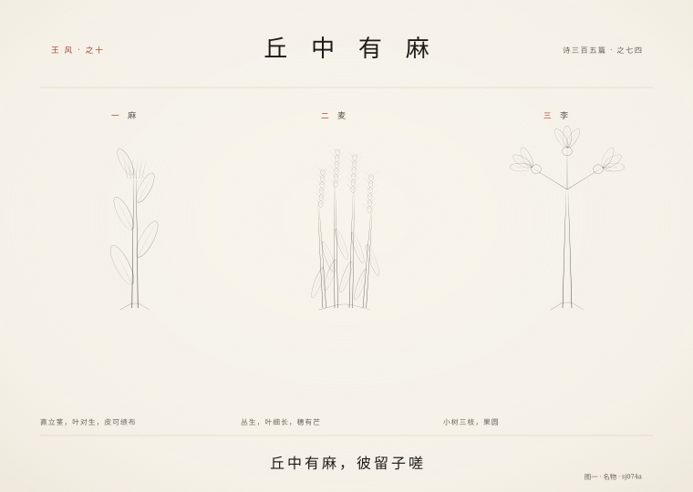
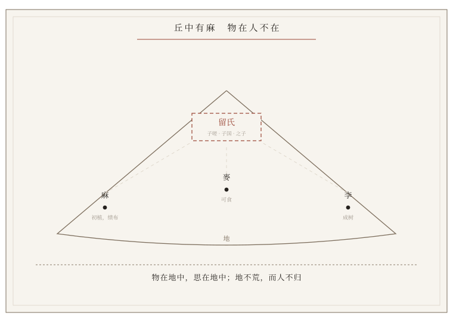

王风 · 之十 SJ074
诗三判：
《毛序》：「《丘中有麻》，思贤也。庄王不明，贤人放逐，国人思之而作是诗也。」
毛传：「留，大夫氏。子嗟，字也。」二章「子国，子嗟父。」三章「玖，石次玉者，男子之所服。」
郑笺：「丘中各有麻、麦、李，以喻贤人所在。」「子嗟，留氏之字。」三章「贻我佩玖，言遗我美玉，思之至也。」
朱子《诗集传》：「妇人望其所与私者而不来，故疑丘中有麻之处，复有与之私而留之者。」以「留」为「留止」，非氏。
本库的看法：《丘中有麻》是一首「物在人不在」的诗。 三章递进：麻初植、麦可食、李成树——是「地不荒」的三证；而所留之人，章章不见。地愈有事，人愈不在，思愈深。 朱子读「留」为留止，是另一读；然「彼留子嗟」「彼留子国」两称「留氏之子」，文从字顺，本库从毛。
先辨四事：丘是高地，不是山；麻是绩布之麻，不是脂麻；留是氏，不是留止；玖是石次玉，不是九。
第一章
丘中有麻，彼留子嗟。彼留子嗟，将其来施施。
第二章
丘中有麦，彼留子国。彼留子国，将其来食。
第三章
丘中有李，彼留之子。彼留之子，贻我佩玖。
读法：三章三换韵，歌→职→之，即三物之递：歌部舒展（初植），职部短促（可食），之部收束（成树）。 韵之宽紧，与物之长成同步。此《诗》韵法之细处。
丘：高地。《尔雅·释丘》「一成为敦丘，再成为陶丘」，丘非山。
麻：大麻，皮可绩布。《毛传》「麻，枲也」；《说文》「麻，枲也」。此麻非脂麻（胡麻）。
麦：来牟之属。《说文》「麦，芒谷」。
李：木之实。《尔雅·释木》「李，木之多子者」。
留：氏。毛传「留，大夫氏」。周有留邑，以邑为氏。
子嗟、子国：毛传「子嗟，字也」；「子国，子嗟父」。一说兄弟，一说父子，本库从传（父子）。
施施：徐行貌。笺「施施，舒行伺间，独来见己之貌」。
佩玖：玖，石之次玉而黑色者。《说文》「玖，石之次玉而黑色者。」男子佩之。
名物总辨：麻麦李三物，非并举三物，是时间之三阶：麻初植而绩（春），麦可食而食（夏），李成树而贻（久）。物之成，恰是人之不返之尺。
丘上有麻，那是留氏的子嗟。 那位子嗟啊——愿他慢慢走来。
丘上有麦，那是留氏的子国。 那位子国啊——愿他来同我食。
丘上有李，那是留氏之子。 那位留氏之子啊——曾贻我一枚佩玖。
一章「将其来施施」：愿其来，而宽其期。 二章「将其来食」：愿其来，而共其事。 三章「贻我佩玖」：不以今之不见，废昔之相遗。
三章之要，在「贻」字：前两章是「盼其来」，末章一转而为「记其曾来」。盼是向前的空，记是向后的实。 一诗至此，思有了凭据，不再只是空等。
此诗教人识「思之形」。思不是空想，思有物：地中的麻麦李是物，怀中的佩玖是物。能指物以思者，其思不散。
教者之要：教少年人思人，不教他对着空气哭，教他去数地上长出的东西。物在，则思有地可落。


图一取三物，按长成之序：麻（直立茎，叶对生，皮可绩布）、麦（丛生，穗有芒）、李（三枝，果圆）。 图二取一义：丘作外弧为「地」，三物沿丘内一线排开（初植／可食／成树，高低不齐是递长）；中心虚框书「留氏」，无实——三虚线自物指框，是「思」的形状。断语：物在地中，思在地中；地不荒，而人不归。